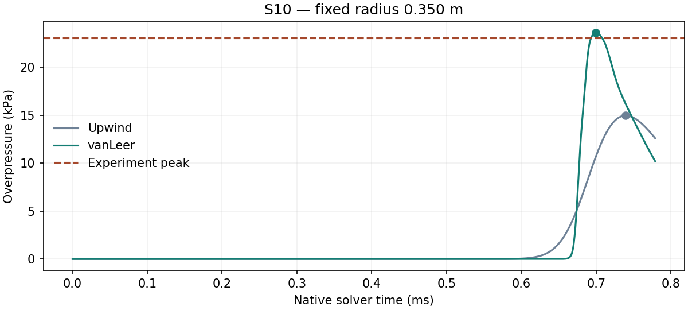
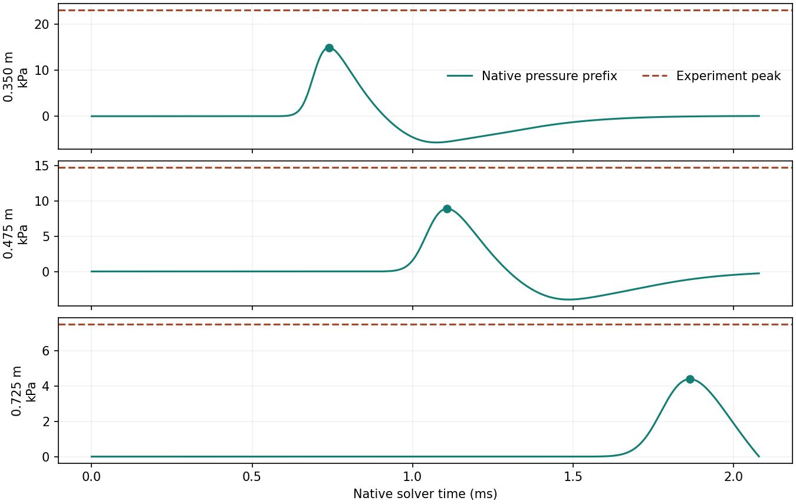

作业 8953576 在 C 集群 cnode5339 通过原生预检，使用 XYFS02 及 8 个 MPI 进程求解。新作业三点均命中已核对的地面采样面。
同一 0–0.779 ms 压力前缀内，基线最大值为 14.95 kPa，限幅重构为 23.57 kPa，实测为 23.08 kPa。近点暂算 APE 从 35.20% 降至 2.12%。两条曲线已出现内部最大值并回落。0.475 m 和 0.725 m 在此快照内尚未到波，完整窗口误差待终态回收。

Fouchier 论文 §6.1.4、图 6.7 给出三个固定半径的地面超压峰值，表 6.7 给出作者计算源的半径与初始压力。采用 20 mm 半球源、149 bar 初始绝压及独立重建的初始热力学状态。下表基线最大值取自原串行作业至 2.079 ms 的原生记录，用于核查传播幅值。原评分窗口为 0–3 ms，两套参考的 APE／MAPE 待完整回收。
| 半径 | 实测峰值 | 论文 OpenFOAM 峰值 | 基线前缀最大值 |
|---|---|---|---|
| 0.350 m | 23.08 kPa | 20.57 kPa | 14.95 kPa |
| 0.475 m | 14.74 kPa | 13.06 kPa | 8.88 kPa |
| 0.725 m | 7.48 kPa | 7.12 kPa | 4.38 kPa |
论文图 6.7 读点 · 表 6.7 原页 · 前缀时刻、原始记录与哈希

基线和 S06、S11 均采用 HLL 通量、一阶 Euler 和迎风重构。本次只将五个场的面重构换成已有教程使用的 vanLeer，速度采用 vanLeerV。物理模型、156,000 单元的网格、时间步控制及比较合同沿用基线。执行改为 8 个 MPI 进程并读回采样面，因此对照时同时保留串行与并行执行记录。
首个作业 8953573 在读取运行库时失败，未启动仿真，证据已回收。重提后只读运行库定位到原 XYFS01，仿真产物写入 XYFS02。